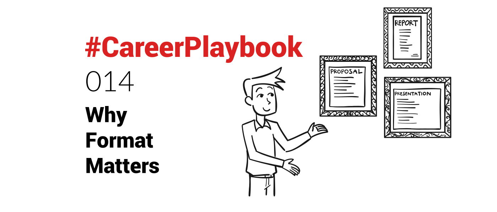

I learned in school to first write the content, then to format it.
Never liked that.
Why it matters
Ultimately, the formatting (design) is the first thing that the recipient will perceive, and it will influence her/his assessment of the work.
Starting with the design helps put the context in which the content will be consumed.
Always delivering professional looking documents will ensure it sets the reader in a positive mindset to assess the content.
Formatting is a reflection of you as a professional - obviously hand in hand with the content itself.
You would not show up to a meeting in scrubby clothes, unwashed, just coming out of bed.
The same applies, in my views, to any document or communication your are sharing - internally or externally.
They represent you. They convey an image of you.
Good formatting inspires trust.
Great formatting can make a lasting impression.
In startups especially, competing against large companies with more resources, it's important to
a) look bigger than you are
b) make an impression
How I focus on format first
As I was building my last startup, I learned about graphic design - and with a mixture of knowing enough about the tools (see below) and working with (low-cost) freelancers, we created documents that made an impact.
We were working in Business Aviation (the niche industry around private jets) and a prospect told me "We usually see that level of professionalism only in commercial aviation" (which was meant as a compliment).
So be it with emails or formal documents - proposals, presentations, agreements, reports - be it internally or externally, I usually think first about the format.
I visualise in my head what it should look like, what it should convey, even before recipients start reading its content.
As I compose documents, I think about ways to make the content more visual - enrich with graphics for example, or multimedia if web-based.
Leverage tools
If you struggle with creating good formatting yourself, there are plenty of tools out there to help you with templates.
The Microsoft Office suite has templates that can be used for free. Already providing a more professional looking design than just bare bones formatting of a blank sheet.
Software solutions (SaaS, ie "in browser") have democratised access to powerful tools and empowered the "citizen formatter".
Online document generators
From designing your own graphics with Canva
Graph Maker - Create a custom chart online within minutes | CanvaEasily create your customized charts & diagrams with Canva’s free online graph maker. Choose from 20+ chart types & hundreds of templates About Canvato creating great looking documents that can be shared online with Pandadoc (I used this myself)
About Canvato creating great looking documents that can be shared online with Pandadoc (I used this myself)
PandaDoc - Sales Documents That Close - Proposals, Quotes & eSignaturesCreate, send, track, and eSign beautiful proposals, contracts, and quotes. Empower your sales team with marketing-approved templates and easily track proposal status. PandaDocMichael McCarthy Co-Founder, CEO
PandaDocMichael McCarthy Co-Founder, CEO or Proposify (which I will be testing soon myself), the choice is large.
or Proposify (which I will be testing soon myself), the choice is large.

If you like to learn and create your own formatting, I highly recommend learning to use the Adobe Creative Cloud apps
Adobe Creative CloudEnjoy the entire collection of our creative desktop and mobile tools, like Photoshop, Illustrator, InDesign, Adobe Premiere Pro, and more with Adobe Creative Cloud.ADOBE CREATIVE CLOUD
 from InDesign (layout) to Illustrator (graphics) and Photoshop (picture editing), all are very powerful tools, working nicely together, that put you fully in control.
from InDesign (layout) to Illustrator (graphics) and Photoshop (picture editing), all are very powerful tools, working nicely together, that put you fully in control.
Udemy has plenty of good courses on Graphic Design:
Graphic Design Online Courses - Create and Edit Digital ArtMaster all aspects of graphic design by enrolling in courses that will train you in typography, drawing, photo editing, logo creation, and more. Udemy
Udemy Learning at least the basics, will help you understand more of what is possible, and communicate with designers in a better way.
Learning at least the basics, will help you understand more of what is possible, and communicate with designers in a better way.
Note: you don't need to be an artist or designer to benefit from learning the basics - trust me, that is what held me back a long time from learning to use these powerful tools.
Outsource
If you don't want the hassle of learning a new tool, you can always rely on the army of designer freelancers available.
Here is a detailed blog post about how to outsource tasks:
#CareerPlaybook 009: Outsourcing Tasks (are you still doing everything yourself?)Ultimately, it is not about doing everything oneself. Low-value tasks should be delegated. Tasks for which your skills are not good enough, should be delegated. Nicolas DevilleNicolas Deville
Nicolas DevilleNicolas Deville The designer I used at my 1st startup - who did a lot of designs I could not do as well, or simply where I lacked the time - was based in the Philippines and charging $25/hour, to give you an indication.
The designer I used at my 1st startup - who did a lot of designs I could not do as well, or simply where I lacked the time - was based in the Philippines and charging $25/hour, to give you an indication.
It is particularly useful, when designing templates, that you will be reusing again and again.
Format matters
Whatever approach and tool you use, just ensure what you provide your prospects, clients, boss, colleagues or suppliers reflects the image of yourself and your company you want to project.
"You never get a second chance to make a first impression."
--Andrew Grant